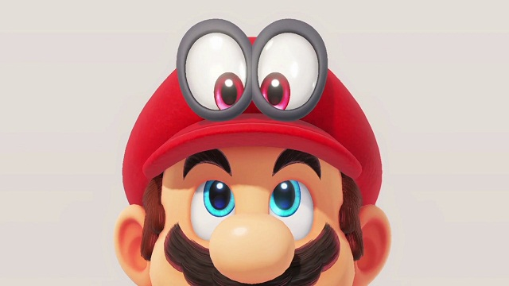

Super Mario Oddysey
Explora increíbles lugares lejos del reino Champiñón al unirte a Mario y su nuevo amigo Cappy en una increíble aventura al mejor estilo trotamundos en 3D. Usa asombrosas habilidades como: el poder de capturar y controlar objetos, animales y enemigos; para conseguir energilunas necesarias para recargar la nave Odyssey y salvar a la princesa Peach de los planes de boda de Bowser.
Los nuevos movimientos de Mario como el salto gorra, lanzar la gorra y captura, te harán pensar de nuevo en su tradicional corre y brinca, y esto gracias al héroe con forma de sombrero, Cappy. Utiliza los enemigos, objetos y animales capturados para avanzar en el juego y descubrir grandes cantidades de objetos ocultos coleccionables.